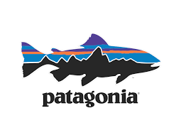
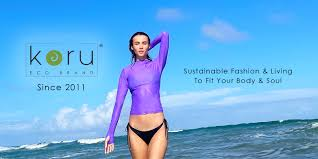
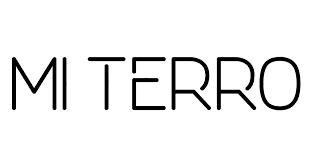
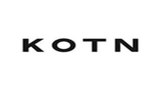

Explore These Eco-Friendly Brands
 Patagonia - Outdoor gear with environmental activism
 Koru Eco Brand - Living in harmony with nature!
 Mi Terro - Enrich The Power of Biomass Waste To End Microplastics!
 Kotn Clothing - Focus on the finest natural fibres, which can biodegrade at the end of their lifecycle.
Reformation - Being naked is the #1 most sustainable option. We're #2.
Know a Brand We Should Feature?
We’d love to hear about your favorite sustainable fashion sources!
Submit a Brand